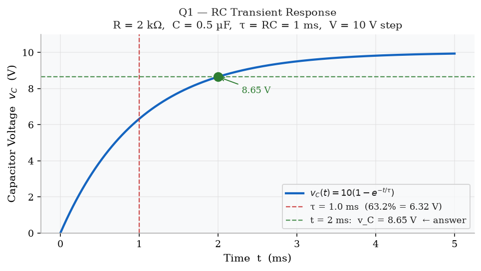
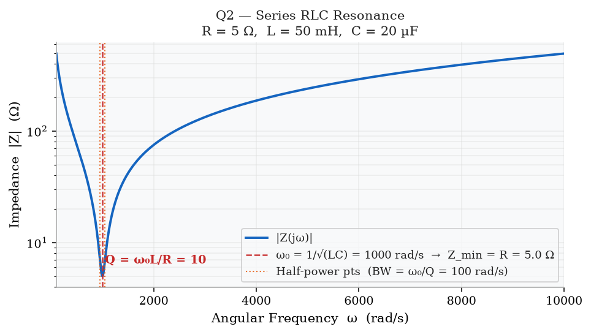
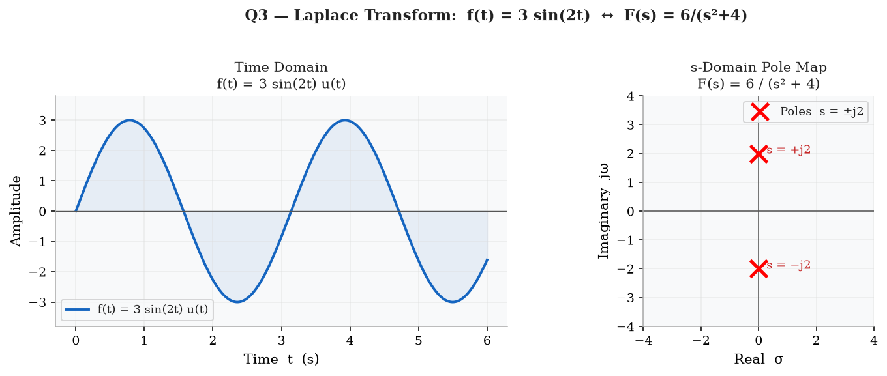
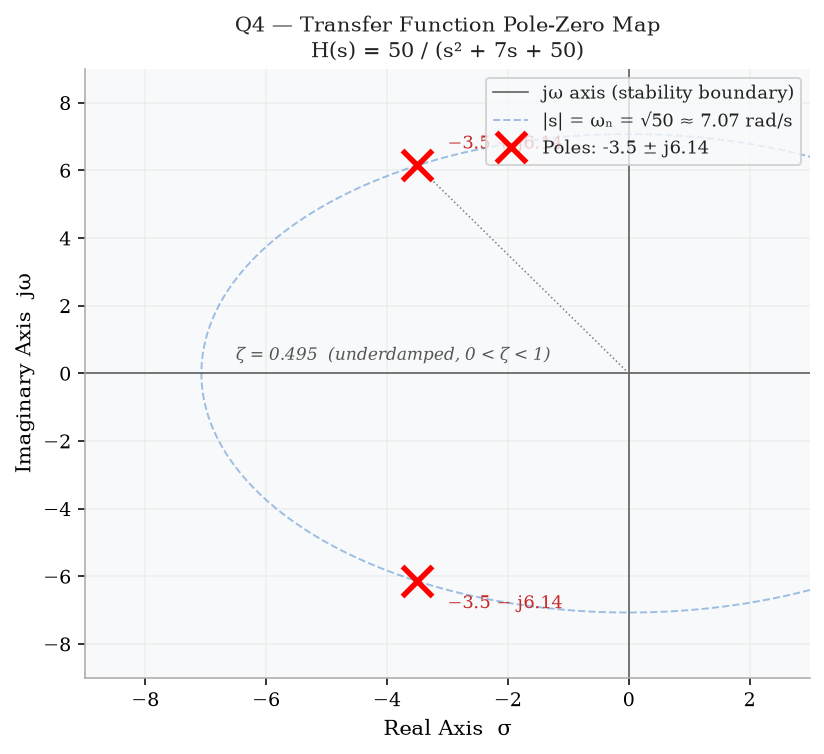

A series RC circuit is connected to a 10 V DC step source at t = 0. The capacitor is initially uncharged. At what voltage will the capacitor be charged to at t = 2 ms?
Formula (FE Handbook p. 363 — RC and RL Transients):
With v_C(0) = 0 and τ = RC:
Step 1 — Find τ:
Step 2 — Evaluate at t = 2 ms = 2τ:
Answer: (C) 8.65 V
Note: (B) 6.32 V = V·(1−e⁻¹) is the voltage at t = 1τ, a common distractor.

For the series RLC circuit below, what is the quality factor Q at resonance?
Formula (FE Handbook p. 363 — Resonance):
Step 1 — Find ω₀:
Step 2 — Find Q:
Step 3 — Verify using alternate form:
Answer: (D) Q = 10
Bandwidth = ω₀/Q = 1000/10 = 100 rad/s. Higher Q → narrower bandwidth → more selective filter.

What is the one-sided (unilateral) Laplace transform F(s) of the signal f(t) = 3 sin(2t) u(t), where u(t) is the unit step function?
Standard pair (from Laplace transform table):
Step 1 — Identify ω:
Step 2 — Apply linearity:
Answer: (B) F(s) = 6 / (s² + 4)
(A) is wrong because ω = 2 was not placed in the numerator.
(C) has the wrong denominator constant (should be ω² = 4, not 2).
(D) is the cosine transform — ℒ{cos(ωt)} = s/(s²+ω²).

A second-order LTI system has the transfer function shown below. What are the poles of H(s)?
Method: Set denominator = 0 and apply quadratic formula.
Step 1 — Discriminant:
Step 2 — Poles:
Answer: (B) s = −3.5 ± j6.14
Damping check: Standard 2nd-order form: s² + 2ζωₙs + ωₙ²
ωₙ = √50 ≈ 7.07 rad/s, 2ζωₙ = 7 → ζ = 7/(2×7.07) ≈ 0.495
Since 0 < ζ < 1, the system is underdamped. Poles are complex conjugates
in the left-half plane (Re < 0), so the system is stable.
(D) is wrong — it uses ωₙ = √50 ≈ 7.07 for the imaginary part instead of the actual imaginary component √(ωₙ² − σ²) = √(50 − 12.25) = √37.75 ≈ 6.14.
